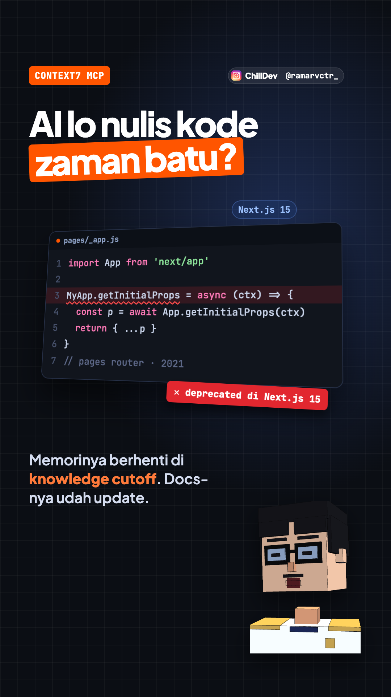
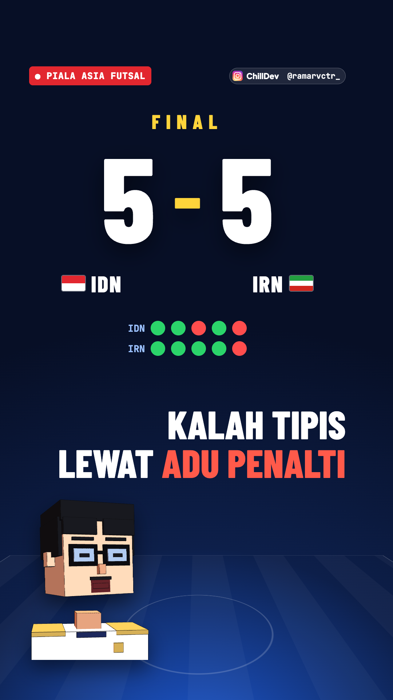
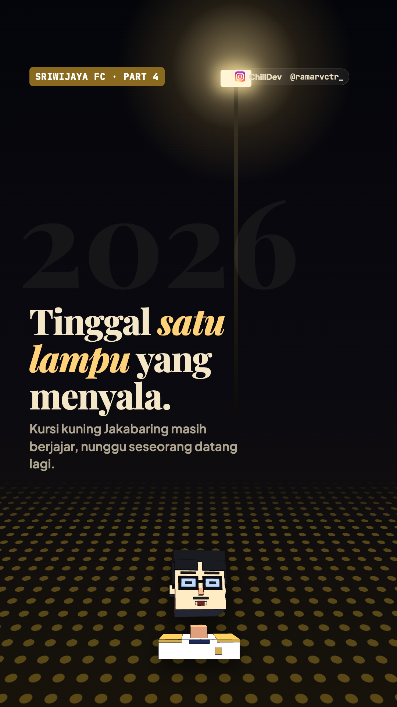
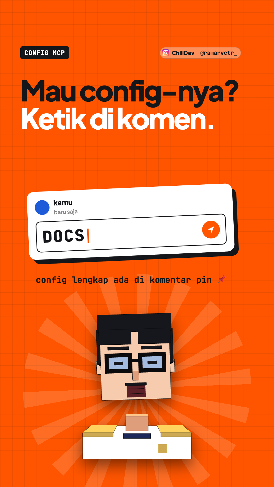

Motion graphic penuh sesuai topik · header ramping · Rama voxel kecil, posisi dan ukuran berubah per scene

1 · DEV TOOLSEditor 3D miring, Rama kanan bawah menoleh ke kode
2 · SIARAN BOLAPapan skor besar, Rama kiri bawah menoleh ke skor
3 · CERITA SENDUStadion malam, Rama kecil di tengah melihat lampu
4 · CTAKolom komentar, Rama lebih besar di tengah